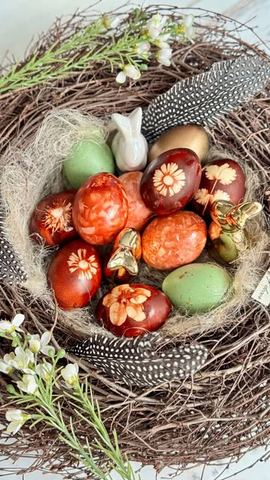

Moja beleška
Sačuvano
Ocena
Sastojci
- Zajedničko za obe tehnike
Priprema
2. Travčice i cvetići + lukovina na dno šerpe
Originalni opis sa Instagrama
Ovo je tehnika farbanja jaja koja me uvek podseti na detinjstvo - jednostavna, mirisna i topla, baš kao praznici nekad. 🤎 Isprobala sam dva načina: 1. Sitno seckana lukovina + papir + par kapi crvene ili roze boje • Svako jaje se uvalja u ovu kombinaciju • Umota se u gazu i pažljivo zategne koncem 2. Travčice i cvetići + lukovina na dno šerpe • Jaje se obavije biljkama i umota u tanku najlon čarapu • Poređa se preko sloja lukovine • Po želji, doda se i kašika-dve hibiskus čaja za intenzivniju boju Zajedničko za obe tehnike: • Voda + 2 kašike sirćeta + 1 kašika soli • Kuvaju se 12–15 minuta od trenutka kada voda proključa, na potpuno tihoj vatri • Nakon kuvanja, ostaviti jaja u vodi da se boja dodatno primi Sačuvaj ovaj video ako voliš tradicionalno, ali želiš da uneseš i malo detinjstva u svoj praznik. ❤️ Na koga vas ovako farbana jaja podsećaju?